Există multe modalități de a formata imagini în Word. De exemplu, puteți modifica dimensiunea sau forma unei imagini pentru a se potrivi mai bine documentului dvs. De asemenea, îi puteți îmbunătăți aspectul folosind instrumentele de ajustare a imaginii Word.
Pentru a decupa o imagine:Când decupați o imagine, o parte a imaginii este eliminată. Decuparea poate fi utilă dacă lucrați cu o imagine prea mare și doriți să vă concentrați doar pe o parte a acesteia.
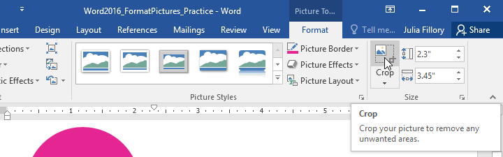
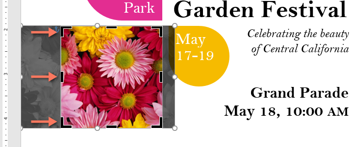
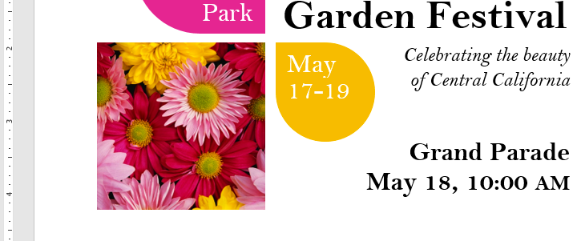
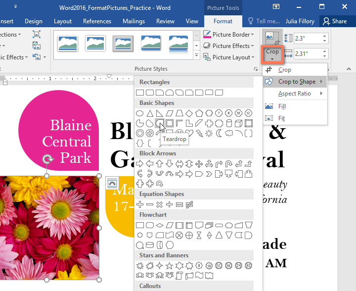
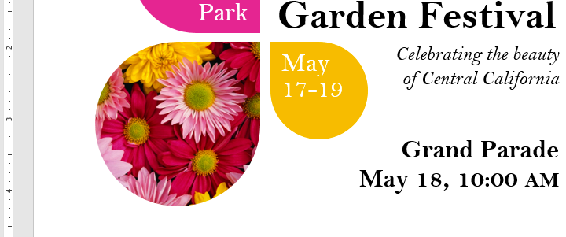
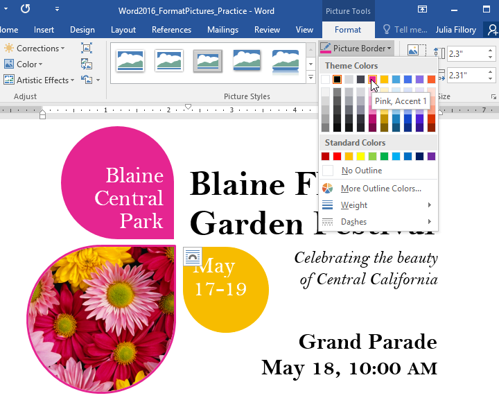
Cu instrumentele de ajustare a imaginii Word, puteți schimba cu ușurință proprietăți precum culoarea, contrastul, saturația și tonul. Word oferă, de asemenea, stiluri de imagine încorporate, care pot fi folosite pentru a adăuga un cadru, umbră și alte efecte predefinite.
Când sunteți gata să ajustați o imagine, pur și simplu selectați-o. Apoi utilizați opțiunile de mai jos, care pot fi găsite în fila Format.
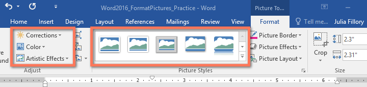
Pentru a utiliza un simbol ca marcator: CorecțiiDe aici, puteți ascuți sau atenua imaginea pentru a regla cât de clară sau neclară apare. De asemenea, puteți regla luminozitatea și contrastul, care afectează luminozitatea și intensitatea generală a imaginii.
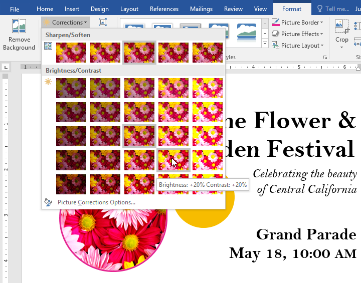
CuloareFolosind această comandă, puteți regla saturația imaginii (cât de vibrante apar culorile), tonul (temperatura de culoare a imaginii, de la rece la cald) și colorarea (nuanța generală a imaginii).
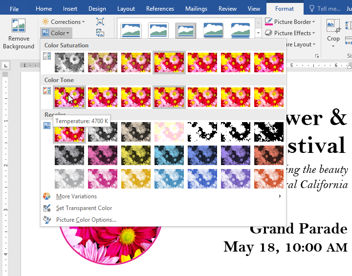
Efecte artisticeAici, puteți aplica imaginii dvs. efecte speciale , cum ar fi pastel, acuarelă sau margini strălucitoare. Deoarece rezultatele sunt atât de îndrăznețe, poate doriți să utilizați aceste efecte cu moderație (mai ales în documentele profesionale).
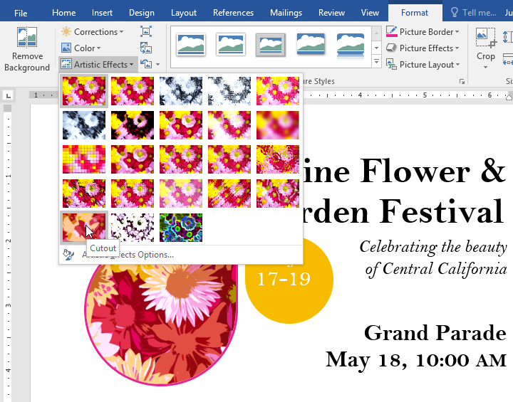
Grupul Stiluri de imagineAcest grup conține diferite stiluri predefinite care fac formatarea imaginii și mai ușoară. Stilurile de imagine sunt concepute pentru a vă încadra imaginea fără a modifica setările sau efectele de bază.
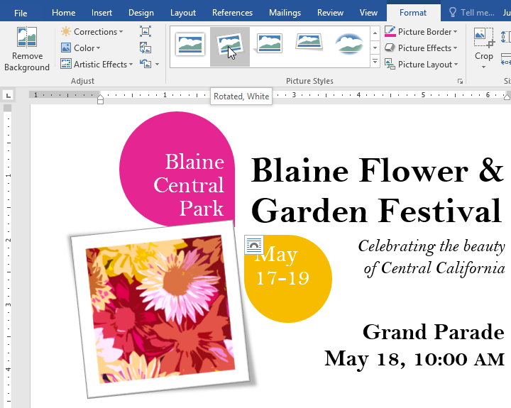
Comprimarea imaginilorDacă intenționați să trimiteți prin e-mail un document care conține imagini, va trebui să monitorizați dimensiunea fișierului acestuia. Imaginile mari, de înaltă rezoluție, pot face documentul să devină foarte mare, ceea ce poate face dificilă atașarea unui e-mail. În plus, zonele decupate ale imaginilor sunt salvate în document în mod implicit, ceea ce se poate adăuga la dimensiunea fișierului.
Din fericire, puteți reduce dimensiunea fișierului documentului prin comprimarea imaginilor. Acest lucru le va reduce rezoluția și va șterge zonele decupate.
Pentru a comprima o imagine: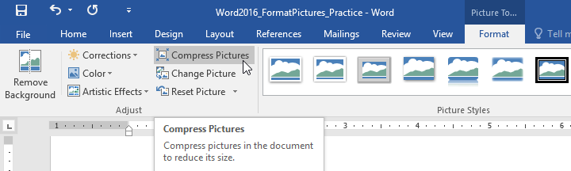
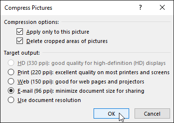